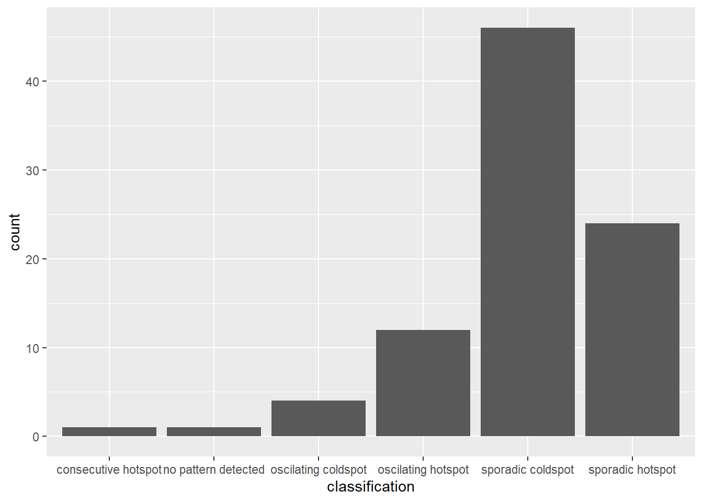
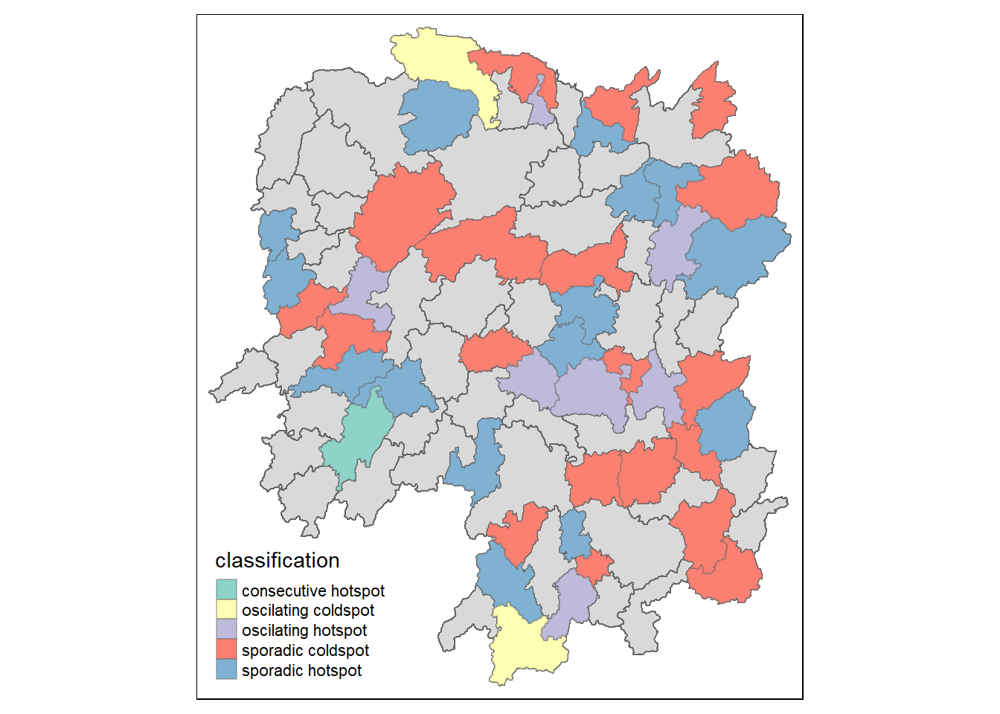

pacman::p_load(sf, sfdep, tmap, plotly, tidyverse)In-Class Exercise 06
1. Overview
Emerging Hot Spot Analysis (EHSA) is a spatio-temporal analysis method for revealing and describing how hot spot and cold spot areas evolve over time. The analysis consists of four main steps:
Building a space-time cube
Calculating Getis-Ord local Gi* statistics for each bin by using an FDR correction
Evaluating these hot and cold spot trends by using Mann-Kendall Test
2. Getting Started
Installing and Loading the R packages:
As usual, p_load() of pacman package will be used to check if the necessary packages have been installed in R. If yes, we will load the packages on R environment as shown above.
As shown above, 5 R packages are required for this exercise: sf, sfdep, tmap, plotly and tidyverse.
3. The Data
Importing the geospatial data:
#|eval: false
hunan <- st_read(dsn = "data/geospatial",
layer = "Hunan")Reading layer `Hunan' from data source
`C:\byebhai8\ISSS626-GeospatialAnalytics\In-Class_Ex\In-Class_Ex06\data\geospatial'
using driver `ESRI Shapefile'
Simple feature collection with 88 features and 7 fields
Geometry type: POLYGON
Dimension: XY
Bounding box: xmin: 108.7831 ymin: 24.6342 xmax: 114.2544 ymax: 30.12812
Geodetic CRS: WGS 84write_rds(hunan, "data/rds/hunan.rds")This code chunk will read the saved rds into R environment:
hunan <- read_rds("data/rds/hunan.rds")Importing the attribute table:
#|eval: false
GDPPC <- read_csv("data/aspatial/Hunan_GDPPC.csv")Rows: 1496 Columns: 3
── Column specification ────────────────────────────────────────────────────────
Delimiter: ","
chr (1): County
dbl (2): Year, GDPPC
ℹ Use `spec()` to retrieve the full column specification for this data.
ℹ Specify the column types or set `show_col_types = FALSE` to quiet this message.write_rds(GDPPC, "data/rds/GDPPC.rds")This code chunk will read the saved rds into R environment:
GDPPC <- read_rds("data/rds/GDPPC.rds")4. Creating a Time Series Cube
In the code chunk below, spacetime() of sfdep is used to create a spatio-temporal cube.
#|eval: false
GDPPC_st <- spacetime(GDPPC, hunan,
.loc_col = "County",
.time_col = "Year")
write_rds(GDPPC_st, "data/rds/GDPPC_st.rds")This code chunk will read the saved rds into R environment:
GDPPC_st <- read_rds("data/rds/GDPPC_st.rds")Next, is_spacetime_cube() of sfdep package will be used to verify if GDPPC_st is indeed a space-time cube object.
is_spacetime_cube(GDPPC_st)[1] TRUEThe TRUE confirms that GDPPC_st object is indeed a space-time cube.
5. Computing Gi*
Next, we will compute the local Gi& statistics.
5.1 Deriving the spatial weights
The code chunk will be used to identify neighbours and to derive an invese distance weight.
#|eval: false
GDPPC_nb <- GDPPC_st %>%
activate("geometry") %>%
mutate(nb = include_self(
st_contiguity(geometry)),
wt = st_inverse_distance(nb,
geometry,
scale = 1,
alpha = 1),
.before = 1) %>%
set_nbs("nb") %>%
set_wts("wt")! Polygon provided. Using point on surface.Warning: There was 1 warning in `stopifnot()`.
ℹ In argument: `wt = st_inverse_distance(nb, geometry, scale = 1, alpha = 1)`.
Caused by warning in `st_point_on_surface.sfc()`:
! st_point_on_surface may not give correct results for longitude/latitude datawrite_rds(GDPPC_nb, "data/rds/GDPPC_nb.rds")This code chunk will read the saved rds into R environment:
GDPPC_nb <- read_rds("data/rds/GDPPC_nb.rds")5.2 Computing Local Gi*
We will now use the new columns to manually calculate the local Gi* for each location. We can do this by grouping by Year and using local_gstar_perm() of sfdep package. After which, we use unnest() to unnest gi_star column of the newly created gi_star data frame.
#|eval: false
gi_stars <- GDPPC_nb %>%
group_by(Year) %>%
mutate(gi_star = local_gstar_perm(
GDPPC, nb, wt)) %>%
tidyr::unnest(gi_star)
write_rds(gi_stars, "data/rds/gi_stars.rds")This code chunk will read the saved rds into R environment:
gi_stars <- read_rds("data/rds/gi_stars.rds")6. Mann-Kendall Test
A monotonic series or function is one that only increases (or decreases) and never changes direction.
With these Gi* measures, we can evaluate each location for a trend using the Mann-Kendall test. The code chunk below uses Changsha county.
#|eval: false
cbg <- gi_stars %>%
ungroup() %>%
filter(County == "Changsha") |>
select(County, Year, gi_star)
write_rds(cbg, "data/rds/cbg.rds")This code chunk will read the saved rds into R environment:
cbg <- read_rds("data/rds/cbg.rds")Next, we plot the result by using gglplot2 functions.
ggplot(data = cbg,
aes(x = Year,
y = gi_star)) +
geom_line() +
theme_light()
We can also create an interactive plot by using ggplotly() of plotly package:;
p <- ggplot(data = cbg,
aes(x = Year,
y = gi_star)) +
geom_line() +
theme_light()
ggplotly(p)Printing Mann-Kendall test report:
cbg %>%
summarise(mk = list(
unclass(
Kendall::MannKendall(gi_star)))) %>%
tidyr::unnest_wider(mk)# A tibble: 1 × 5
tau sl S D varS
<dbl> <dbl> <dbl> <dbl> <dbl>
1 0.485 0.00742 66 136. 589.In the above result, sl is the p-value. With reference to the results, we will reject the hypothesis null and infer that a slight upward trend.
We can replicate this for each location by using group_by() of dplyr package:
ehsa <- gi_stars %>%
group_by(County) %>%
summarise(mk = list(
unclass(
Kendall::MannKendall(gi_star)))) %>%
tidyr::unnest_wider(mk)
head(ehsa)# A tibble: 6 × 6
County tau sl S D varS
<chr> <dbl> <dbl> <dbl> <dbl> <dbl>
1 Anhua 0.191 0.303 26 136. 589.
2 Anren -0.294 0.108 -40 136. 589.
3 Anxiang 0 1 0 136. 589.
4 Baojing -0.691 0.000128 -94 136. 589.
5 Chaling -0.0882 0.650 -12 136. 589.
6 Changning -0.750 0.0000318 -102 136. 589.7. Performing Emerging Hotspot Analysis
Specifying 99 means 100 simulations:
ehsa <- emerging_hotspot_analysis(
x = GDPPC_st,
.var = "GDPPC",
k = 1,
nsim = 99
)Visualizing the distribution of EHSA classes:
ggplot(data = ehsa,
aes(x = classification)) +
geom_bar()
We need to join both hunan and ehsa together by using the code chunk below.
#|eval: false
hunan_ehsa <- hunan %>%
left_join(ehsa,
by = join_by(County == location))
write_rds(hunan_ehsa, "data/rds/hunan_ehsa.rds")This code chunk will read the saved rds into R environment:
hunan_ehsa <- read_rds("data/rds/hunan_ehsa.rds")tmap function will be used to plot a categorical choropleth map by using the code chunk below.
ehsa_sig <- hunan_ehsa %>%
filter(p_value < 0.05)
tmap_mode("plot")tmap mode set to plottingtm_shape(hunan_ehsa) +
tm_polygons() +
tm_borders(alpha = 0.5) +
tm_shape(ehsa_sig) +
tm_fill("classification") +
tm_borders(alpha = 0.4)Warning: One tm layer group has duplicated layer types, which are omitted. To
draw multiple layers of the same type, use multiple layer groups (i.e. specify
tm_shape prior to each of them).
x